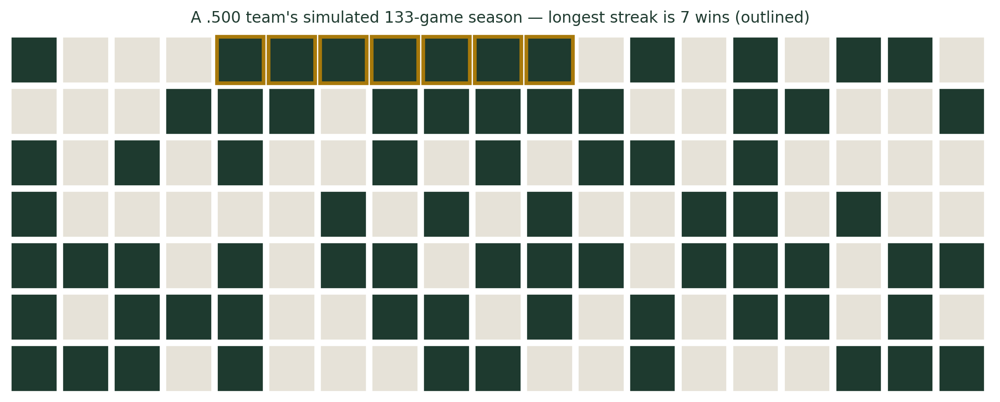
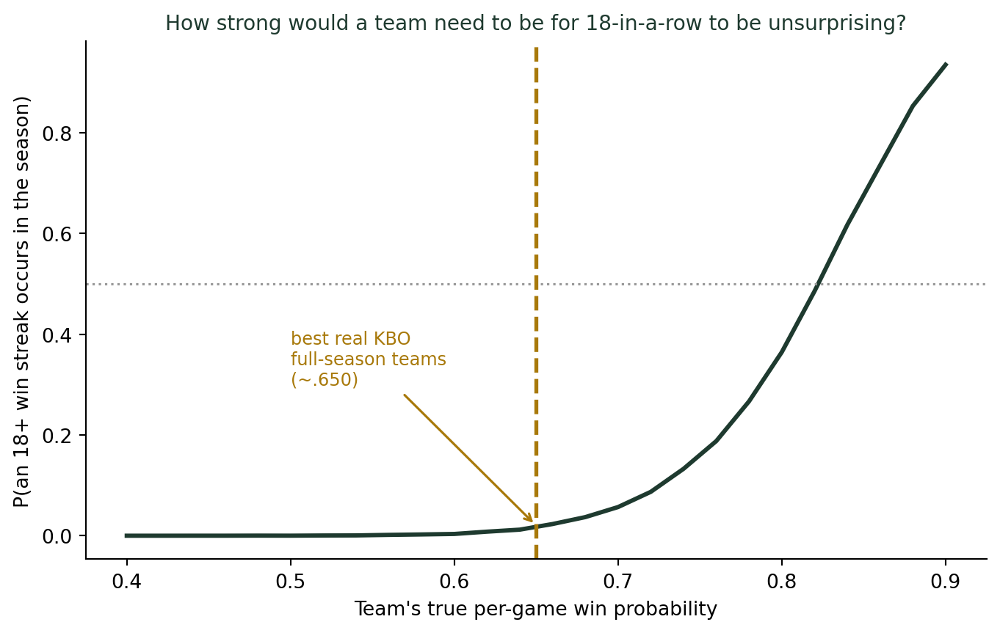

(기록의 착시, 대표값의 재발견) 연승과 연패, 우연일까 실력일까 — 스트릭의 확률적 해석
통계기초
확률
행동통계
2009년 SK 와이번스는 133경기 시즌의 마지막 19경기를 모두 이겼다. 아직도 깨지지 않은 KBO 역대 최다 연승 기록이다. 그 시즌 SK가 그저 평범한 5할 팀이었다고 가정하고 시즌을 수만 번 시뮬레이션해보면, 이 정도 연승이 얼마나 예외적인 사건인지 — 그리고 순전히 운으로 설명하려면 팀이 얼마나 압도적으로 강해야 하는지 — 숫자로 드러난다.
133경기 중 19연승, 시즌 마지막 경기까지 이어진 기록
2009년 8월 25일, SK 와이번스는 승리를 거둔 뒤 그해 정규시즌이 끝날 때까지 단 한 번도 지지 않았다. 133경기 체제였던 그 시즌, SK는 마지막 19경기를 모두 이겼다 — 1986년 삼성 라이온즈가 세운 16연승 기록을 갈아치우며, 지금까지도 KBO 리그 역대 최다 연승(단일 시즌 기준)으로 남아 있는 기록이다. 그런데도 SK는 그 시즌 정규리그 2위에 그쳤고, 한국시리즈에서는 KIA 타이거즈에 7차전 접전 끝에 우승을 내줬다. 팬들에게는 “막판에 완전히 다른 팀이 됐다”는 이야기로 기억된다.
스포츠 중계에서 이런 연승·연패 기록이 나오면 항상 같은 해석이 붙는다. 연승 중인 팀에는 “지금 팀 전체가 물올랐다”, 연패 중인 팀에는 “선수단 분위기가 완전히 무너졌다”는 식이다. 그런데 지난 글에서 다룬 농구의 핫핸드처럼, 이런 서사에도 같은 질문을 던져볼 수 있다. 정말 그 기간에만 팀의 실력이 달라졌던 걸까, 아니면 133경기라는 긴 시즌을 치르다 보면 순전한 우연만으로도 나올 수 있는 굴곡일까?
만약 그 시즌 SK가 그냥 5할 팀이었다면
이 질문에 답하는 첫 번째 방법은, 매 경기 승리 확률이 정확히 50%이고 경기 결과가 서로 독립적인 가상의 팀을 만들어 133경기 시즌을 시뮬레이션해보는 것이다.
초록 칸은 승리, 베이지색 칸은 패배다. 이 가상의 5할 팀에게 최장 연승은 7경기에 그쳤다. 시드값을 바꿔가며 수백 번을 다시 돌려도, 5할 팀에서 19연승이 나오는 경우는 거의 보이지 않는다. 실제로 같은 조건(승률 50%, 133경기)의 가상 시즌을 수만 번 시뮬레이션해보면, 19연승 이상이 한 번이라도 나오는 시즌은 손에 꼽을 정도로 드물다. 핫핸드 글에서 살펴본 100번의 슛 중 8연속 성공(약 12번에 1번)과는 비교가 안 될 만큼 희귀하다. 시행 횟수가 100에서 133으로 조금 늘었을 뿐인데, 왜 이렇게 결과가 달라질까? 답은 연승의 길이 자체에 있다 — 8연속과 19연속은 산술적으로 두 배 남짓 차이가 아니라, 확률적으로는 자릿수가 다른 사건이다. 매 경기 독립적으로 동전을 던진다고 하면, 연승이 한 경기 늘어날 때마다 그 연승이 나올 확률은 승률만큼 곱절로 줄어들기 때문이다.
그렇다면 얼마나 강한 팀이어야 이 기록이 “흔한 일”이 될까
5할 팀은 사실상 불가능하다는 게 확인됐으니, 질문을 뒤집어보자. 승률이 몇 퍼센트인 팀이어야, 133경기 시즌 어딘가에서 19연승이 나오는 일이 동전 던지기(반반 확률)만큼 흔해질까?

결과는 뚜렷하다. 승률 65%인 팀 — 이 정도면 한 시즌 내내 유지하기도 벅찬, KBO 역대 최고 수준의 압도적인 강팀이다 — 이라도 19연승이 나올 확률은 1%를 겨우 넘는 수준이다. 곡선이 50%를 넘어서는 지점은 승률이 80%대 중반에 이르러서다. 그런데 133경기를 치르며 승률 8할대를 유지하는 팀은 KBO는 물론 세계 어느 프로야구 리그의 역사에도 없다. 즉, “SK가 그 시즌 내내 그 정도로 압도적인 팀이었다”는 가정으로도 이 기록은 설명되지 않는다.
그래서 이 19연승을 어떻게 읽어야 할까
- 순전한 우연(5할 팀)으로는 설명이 안 된다. 수만 시즌을 돌려도 한 번 나올까 말까다.
- 시즌 내내 유지 가능한 최고 수준의 실력(6할대 팀)으로도 설명이 부족하다. 여전히 100번 중 1번꼴이다.
- 가장 정직한 해석은 “그 19경기 동안 SK의 실제 승리 확률이 시즌 평균보다 훨씬 높이 올라가 있었다”는 것이다. 실제로 이 연승은 정규시즌 마지막 경기까지 그대로 이어졌다 — 순위 경쟁이 가장 치열해지는 시즌 막판이라는 특정 구간과 겹쳤다는 사실은, 그 기간 팀의 “진짜 실력”이 시즌 평균을 크게 웃돌았을 가능성에 무게를 실어준다.
왜 이런 계산이 가능한가: 기하분포와 무기억성
이 계산의 뼈대는 사실 단순하다. 매 경기를 승리 확률 \(p\)의 독립적인 베르누이 시행으로 본다면, “다음 패배가 나올 때까지 몇 경기가 걸리는가”는 기하분포를 따른다. 연승이 \(k\)경기까지 이어지려면, 그 \(k\)번의 시행이 모두 성공해야 하므로 확률은 대략 \(p^{k}\)로 줄어든다. \(p\)가 1보다 작은 한, \(k\)가 늘어날수록 이 값은 기하급수적으로 작아진다 — 19연승이 8연승보다 산술적으로 두 배 남짓이 아니라 확률적으로 자릿수가 다른 이유가 여기에 있다.
여기서 중요한 전제가 하나 있다. 이 모형은 매 경기가 이전 경기의 결과와 완전히 무관하다고 가정한다. 도박사의 오류를 다룬 지난 글에서 살펴본 바로 그 “무기억성”이다. 그런데 현실의 야구팀은 동전과 다르다. 부상 선수의 복귀, 상대 팀의 전력, 선수단의 심리적 흐름은 실제로 경기 결과들 사이에 상관관계를 만들어낼 수 있다. 시뮬레이션이 보여준 “5할 팀·6할대 팀으로는 설명 안 된다”는 결론은, 바로 이 무기억성 가정이 그 19경기 구간에서는 깨져 있었다는 뜻으로 읽을 수 있다 — 즉 진짜로 무언가가 달라졌던 구간이라는 신호다.
더 깊이: 기하분포로 “연속 사건”을 재는 법
강의노트 〈수리통계학 5. 유명분포 — 기하분포〉는 성공확률 \(p\)인 베르누이 시행을 반복할 때, 처음 성공이 나오기까지 걸리는 시행 횟수 \(X\)가 \(P(X=x) = p(1-p)^{x-1}\)을 따르며 평균이 \(E(X) = 1/p\)라고 정리한다. 승률 50%인 팀은 평균적으로 2경기마다 한 번, 즉 이기고 지고를 반복하는 흐름이 “정상”이라는 뜻이다. 이 글에서 다룬 “연승의 길이”는 이 기하분포의 반대편 — 다음 패배(=실패)가 나오기까지 버틴 성공의 개수 — 를 재는 것과 같은 문제다. 강의노트가 소개하는 기하분포의 무기억성은, 매 경기가 앞선 결과를 “잊어버리고” 다시 승률 \(p\)의 시행으로 초기화된다는 이 글의 핵심 가정 그 자체이기도 하다.
결론: 연승·연패를 보거든, 역으로 승률을 계산해보라
핫핸드 글에서 나는 “8연속 성공 정도는 순전한 우연으로도 흔하게 나온다”고 결론 내렸다. 이번 글의 결론은 정반대다. 똑같은 확률 모형을 쓰더라도, 시행 횟수와 요구되는 연속 길이의 조합에 따라 어떤 스트릭은 우연으로 충분히 설명되고, 어떤 스트릭은 우연만으로는 설명이 안 된다. 연승이나 연패 기록을 마주하면, “굉장하다” 또는 “우연이다”로 성급하게 결론짓기 전에 이렇게 물어보라. 이 정도 스트릭이 나오려면 팀(또는 사람)의 실제 실력이 최소 어느 수준이어야 하는가? 그 수준이 현실적으로 말이 되는 범위라면 우연도 가능하다. 하지만 그 수준이 역사상 아무도 도달한 적 없는 영역이라면, 그 스트릭은 우연이 아니라 무언가 실제로 달라졌다는 증거로 읽는 편이 더 정직하다.